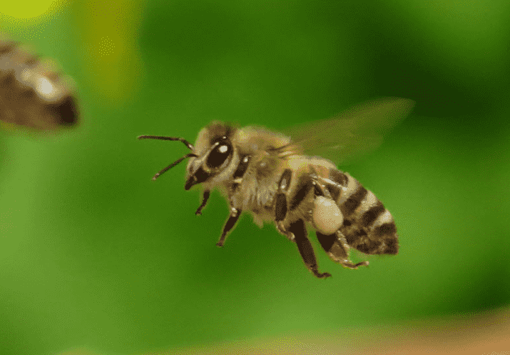
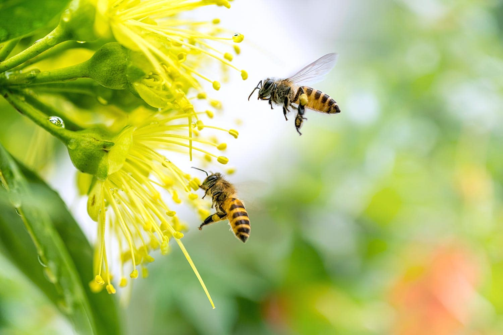
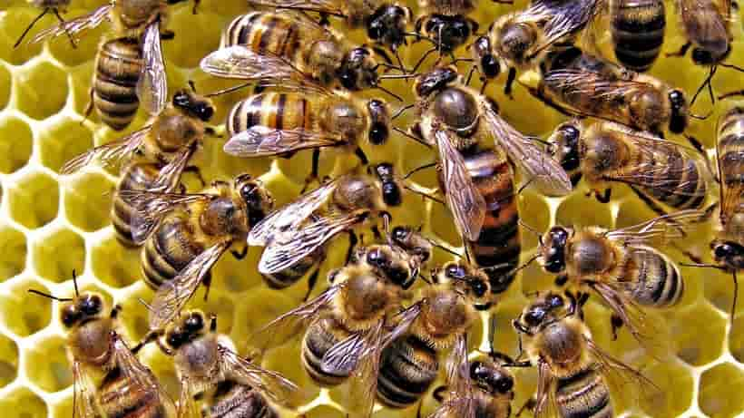
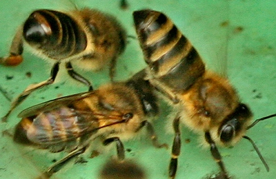

Рабочие пчелы
Рабочие пчёлы играют важную роль в жизни пчелиной колонии. Эти непоседливые труженицы являются основным трудовым ресурсом улья и ответственны за выполнение различных задач, необходимых для выживания и процветания пчеловодного сообщества.

Прежде всего, рабочие пчёлы представляют собой большинство пчёл в улье. Они являются самками, но неоплодотворёнными, что делает их неспособными к размножению и откладыванию яиц. Вместо этого, их основная цель - обеспечение поддержания жизни и развития колонии. Рабочие пчёлы начинают свою жизнь в качестве пчелиных личинок, после чего преобразуются во взрослых особей, готовых приступить к работе.
Основные функции рабочих пчёл в пчелиной колонии включают следующее:
Сбор нектара и пыльцы: Одной из главных задач рабочих пчёл является сбор нектара и пыльцы с цветков. Нектар служит основным источником углеводов для пчелиной колонии, а пыльца - важным источником белка. Рабочие пчёлы активно собирают эти ресурсы и доставляют их в улей для дальнейшего использования.

Строительство сот: Рабочие пчёлы отвечают за строительство пчелиных сот, в которых хранится мёд, пыльца, яйца и личинки. Они вырабатывают воск из восковых железок на своем животе и используют его для строительства сот.
Уход за потомством: Рабочие пчёлы заботятся о личинках, которые развиваются внутри сот. Они кормят и ухаживают за молодыми пчёлами и пчелиными личинками, обеспечивая им все необходимые условия для здорового роста и развития.
Кормление матки и дронов: Рабочие пчёлы также отвечают за кормление матки и дронов - самцов пчёл. Они производят и распространяют специальное молочко, называемое пчелиным молоком, которое служит источником питания для матки и дронов.

Обеспечение вентиляции и охраны улья: Рабочие пчёлы поддерживают оптимальные условия в улье, обеспечивая вентиляцию и контролируя температуру и влажность. Они также защищают улей от интрузии и нападения враждебных насекомых и животных.

Кроме того, рабочие пчёлы выполняют множество других задач в улье, таких как очистка сот, передача информации о местонахождении источников пыльцы и нектара, вентиляция улья и т. д. Без их непрерывного труда пчелиная колония не смогла бы выжить и процветать.